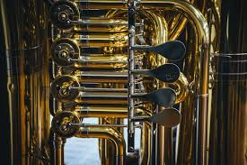

{kind=link}

The tuba is the lowest-pitched musical instrument in the brass family. As with all brass instruments, the sound is produced by lip vibration a buzz into a mouthpiece. It first appeared in the mid-19th century, making it one of the newer instruments in the modern orchestra and concert band. The tuba largely replaced the ophicleide. Tuba is Latin for "trumpet".
A person who plays the tuba is called a tubaist, a tubist, or simply a tuba player. In a British brass band or military band, they are known as bass players.
Prussian Patent No. 19 was granted to Wilhelm Friedrich Wieprecht and Johann Gottfried Moritz (1777-1840) on September 12, 1835 for a "bass tuba" in F1. The original Wieprecht and Moritz instrument used five valves of the Berlinerpumpen type that were the forerunners of the modern piston valve. The first tenor tuba was invented in 1838 by Carl Wilhelm Moritz (1810-1855), son of Johann Gottfried Moritz.
The addition of valves made it possible to play low in the harmonic series of the instrument and still have a complete selection of notes. Prior to the invention of valves, brass instruments were limited to notes in the harmonic series, and were thus generally played very high with respect to their fundamental pitch. Harmonics starting three octaves above the fundamental pitch are about a whole step apart, making a useful variety of notes possible.
The ophicleide used a bowl-shaped brass instrument mouthpiece but employed keys and tone holes similar to those of a modern saxophone. Another forerunner to the tuba was the serpent, a bass instrument that was shaped in a wavy form to make the tone holes accessible to the player. Tone holes changed the pitch by providing an intentional leak in the bugle of the instrument. While this changed the pitch, it also had a pronounced effect on the timbre. By using valves to adjust the length of the bugle the tuba produced a smoother tone that eventually led to its popularity. These popular instruments were mostly written for by French composers, especially Hector Berlioz. Berlioz famously wrote for the ophicleide in his compositions Symphonie fantastique and Benvenuto Cellini (opera). These pieces are now normally performed on F or CC tuba.
Adolphe Sax, like Wieprecht, was interested in marketing systems of instruments from soprano to bass, and developed a series of brass instruments known as saxhorns. The instruments developed by Sax were generally pitched in E♭ and B♭, while the Wieprecht "basstuba" and the subsequent Cerveny contrabass tuba were pitched in F and C (see below on pitch systems). Sax's instruments gained dominance in France,and later in Britain and America, as a result of the popularity and movements of instrument makers such as Gustave Auguste Besson (who moved from France to Britain) and Henry Distin (who eventually found his way to America).
The cimbasso is also seen instead of a tuba in the orchestral repertoire. The name is translated from "corno in basso" in German. The original design was inspired by the ophicleide and bassoon. The cimbasso is rare today, but it is sometimes used in historically accurate performances.
Tubas are found in various pitches, most commonly in F, E♭, C, or B♭. The key of a tuba depends on the fundamental pitch of the instrument, or fundamental note in the series of overtones (also called partials) available without any valves being pressed. Tubas in different keys use different lengths of tubing. The main tube of a B♭ tuba is approximately 18 feet (5.5 m) long, while that of a C tuba is 16 feet (4.9 m), of an E♭ tuba 13 feet (4.0 m), and of an F tuba 12 feet (3.7 m). The instrument has a conical bore, meaning the bore diameter increases as a function of the tubing length from the mouthpiece to the bell. The conical bore causes the instrument to produce a preponderance of even- order harmonics.
A tuba with its tubing wrapped for placing the instrument on the player's lap is usually called a concert tuba or simply a tuba. Tubas with the bell pointing forward (pavillon tournant) instead of upward are often called recording tubas because of their popularity in the early days of recorded music, as their sound could more easily be directed at the recording microphone. When wrapped to surround the body for cavalry bands on horseback or marching, it is traditionally known as a helicon. The modern sousaphone, named after American bandmaster John Philip Sousa, resembles a helicon with the bell pointed up (in the original models as the J. W. Pepper prototype and Sousa's concert instruments) and then curved to point forward (as developed by Conn and others). Some ancestors of the tuba, such as the military bombardon, had unusual valve and bore arrangements compared to modern tubas.
During the American Civil War, most brass bands used a branch of the brass family known as saxhorns, which, by today's standards, have a narrower bore taper than tuba—the same as true cornets and baritones, but distinct from trumpets, euphoniums, and others with different tapers or no taper. Around the start of the Civil War, saxhorns manufactured for military use in the USA were commonly wrapped with the bell pointing backwards over the player's shoulder, and these were known as over- the-shoulder saxhorns, and came in sizes from cornets down to E♭ basses. However, the E♭ bass, even though it shared the same tube length as a modern E♭ tuba, has a narrower bore and as such cannot be called by the name tuba except as a convenience when comparing it to other sizes of the Saxhorn.
Tubas are made with either piston or rotary valves. Rotary valves, invented by Joseph Riedl, are based on a design included in the original valve patents by Friedrich Bluhmel and Heinrich Stolzel in 1818. Červeny of Graslitz was the first to use true rotary valves, starting in the 1840s or 1850s. Modern piston valves were developed by François Périnet for the saxhorn family of instruments promoted by Adolphe Sax around the same time. Pistons may either be oriented to point to the top of the instrument (top-action, as pictured in the figure at the top of the article) or out the front of the instrument (front-action or side-action).
Piston valves require more maintenance than rotary valves - they require regular oiling to keep them freely operating, while rotary valves are sealed and seldom require oiling. Piston valves are easy to disassemble and re-assemble, while rotary valve disassembly and re-assembly is much more difficult and is generally left to qualified instrument repair persons.
Tubas generally have from three to six valves, though some rare exceptions exist. Three-valve tubas are generally the least expensive and are almost exclusively used by amateurs, and the sousaphone (a marching version of a BB♭ tuba) almost always has three valves. Among advanced players, four and five valve tubas are by far the most common choices, with six-valve tubas being relatively rare except among F tubas, which mostly have five or six valves.
The valves add tubing to the main tube of the instrument, thus lowering its fundamental pitch. The first valve lowers the pitch by a whole step (two semitones), the second valve by a semitone, and the third valve by three semitones. Used in combination, the valve tubing is too short and the resulting pitch tends to be sharp. For example, a BB♭ tuba becomes (in effect) an A♭ tuba when the first valve is depressed. The third valve is long enough to lower the pitch of a BB♭ tuba by three semitones, but it is not long enough to lower the pitch of an A♭ tuba by three semitones. Thus, the first and third valves used in combination lower the pitch by something just short of five semitones, and the first three valves used in combination are nearly a quarter tone sharp.The fourth valve is used in place of combinations of the first and third valves, and the second and fourth used in combination are used in place of the first three valves in combination. The fourth valve can be tuned to lower the pitch of the main tube accurately by five semitones, and thus its use corrects the main problem of combinations being too sharp. By using the fourth valve by itself to replace the first and third combination, or the fourth and second valves in place of the first, second and third valve combinations, the notes requiring these fingerings are more in tune. The fourth valve used in combination with, rather than instead of, the first three valves fills in the missing notes in the bottom octave allowing the player to play chromatically down to the fundamental pitch of the instrument. For the reason given in the preceding paragraph some of these notes will tend to be sharp and must by "lipped" into tune by the player.
A fifth and sixth valve, if fitted, are used to provide alternative fingering possibilities to improve intonation, and are also used to reach into the low register of the instrument where all the valves will be used in combination to fill the first octave between the fundamental pitch and the next available note on the open tube. The fifth and sixth valves also give the musician the ability to trill more smoothly or to use alternative fingerings for ease of playing. This type of tuba is what is most found in orchestras and wind bands around the world.
The bass tuba in F is pitched a fifth above the BB♭ tuba and a fourth above the CC tuba, so it needs additional tubing length beyond that provided by four valves to play securely down to a low F as required in much tuba music. The fifth valve is commonly tuned to a flat whole step, so that when used with the fourth valve, it gives an in-tune low B♭. The sixth valve is commonly tuned as a flat half step, allowing the F tuba to play low G as 1-4-5-6 and low G♭ as 1-2-4-5-6. In CC tubas with five valves, the fifth valve may be tuned as a flat whole step or as a minor third depending on the instrument.
